OUR VILLAGE · ACROSS BORDERS
Tarxien Community Around the World
Find communities connected to Ħal Tarxien, its traditions and Marija Annunzjata.
AUSTRALIA · VICTORIA
Our Tarxien family in Australia
To our Maltese families, emigrants and descendants in Australia: this section is for you. Although we live far apart, our love for Ħal Tarxien, our faith and our traditions keep us connected.
Thank you for keeping the spirit of our village alive and sharing it with the next generation. You make us proud, wherever you are.
A shared home for our memories, faith and family connections.
KEEPING OUR TRADITIONS ALIVE
Tarxien Social Club Victoria
The club began in 1976, when Joe Farrugia, relatives and friends from Tarxien gathered in Australia to continue celebrating Our Lady of the Annunciation. Their first feast in Queenscliff centred on a framed Annunciation picture, Mass and recorded poems sent from Malta.[1] [2]
Music, worship and family gatherings became part of its community life. A first statue followed in 1979; in 1980 the club organised its first St Gregory’s picnic at Portarlington. Its historical profile also records November remembrance Masses beginning in 1982.[1] [2]
In 2026 the club celebrated fifty years alongside the Annunciation feast. A thank-you notice in Holy Trinity Catholic Parish’s bulletin of 3 May 2026 acknowledges the clergy and community who took part.[3]
External community links. The MCCV profile is historical; consult the club for current activities.
A DEVOTION SHARED ACROSS THE WORLD
Tarxien Social Club Victoria and the Annunciation
Tarxien Social Club Victoria commissioned a new Annunciation statue for its community in Australia. The statue was created by Renzo Gauci, with painting and gilding by John Orlando.[1] [2]
Through this work, the club helped carry a treasured part of our village’s devotion across the world, strengthening the connection between our communities in Australia and Malta.
- Commission
- Tarxien Social Club Victoria Confirmed by contributor Clifford Debattista, 16 October 2026.
- Creator
- Renzo Gauci
- Painting and gilding
- John Orlando
The club histories distinguish the first statue of 1979 from the later replacement by Gauci and Orlando. The fiftieth anniversary commemorates the club’s foundation in 1976.[1] [2]
The statue and procession
Select a photograph to see the complete group, wings and pedestal.

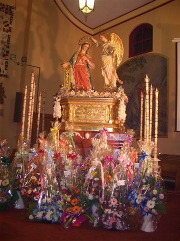
View full photograph ↗ View full photograph ↗
View full photograph ↗The parish connection in Victoria
Holy Trinity Catholic Parish brings together Laverton, Altona Meadows and Point Cook. Its history begins with Laverton Parish in 1969 and the construction of St Martin de Porres War Memorial Church/Hall. Queen of Peace Church followed in 1992; Point Cook Masses were held at the RAAF chapel from 2001 and at Stella Maris school from 2016. The parish formally adopted its Holy Trinity name on 24 November 2019.[4]
The 2026 anniversary notice documents the club’s connection with this parish and its shared Annunciation celebrations.[3]
WITH GRATITUDE AND AFFECTION
Remembering Renzo Gauci
Renzo Gauci (29 March 1959–30 August 2018) was a sculptor, restorer and designer from Ħal Tarxien. Educated at De La Salle College, he continued his artistic training at the School of Art in Valletta. His practice included papier-mâché, wood carving, sacred art and festa decoration.[5]
We remember Renzo Gauci with gratitude and affection. A talented artist from Ħal Tarxien, he gave so much to our village and to the traditions that bring our communities together.
His beautiful work has a special place in the hearts of people in Malta and Australia. He loved our village and its people, and through his art he left us something to treasure and pass on.
Thank you, Renzo, for your talent, dedication and contribution to our community. You will always be remembered.
Our community in photographs
Photographs supplied by Clifford Debattista. The full images remain available without cropping people from the scene.

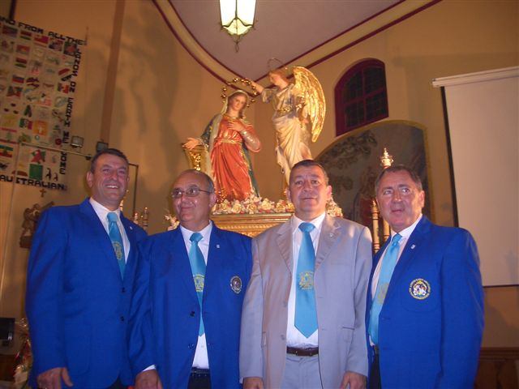
View full photograph ↗
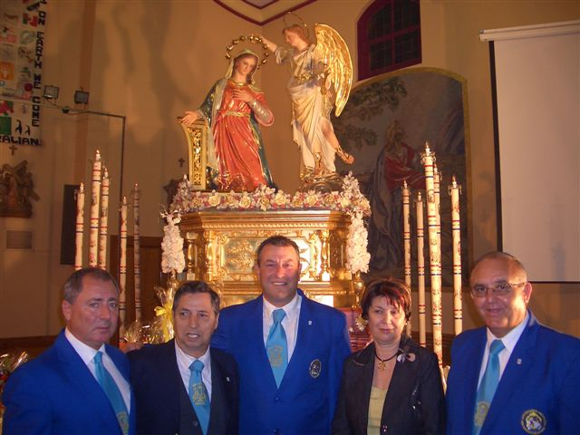
View full photograph ↗
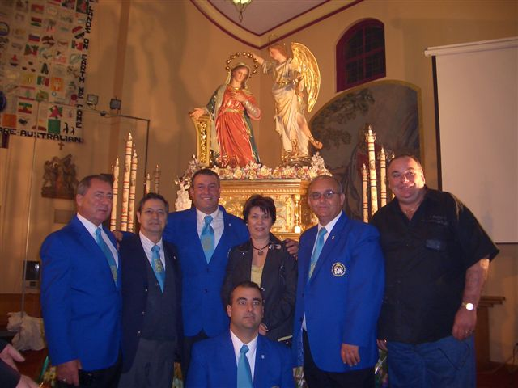
View full photograph ↗
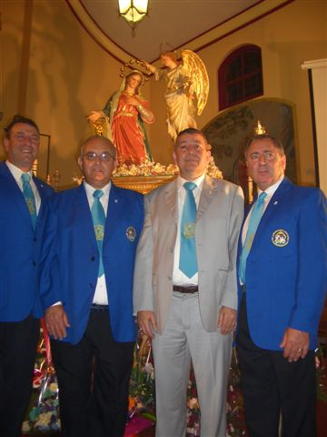
View full photograph ↗
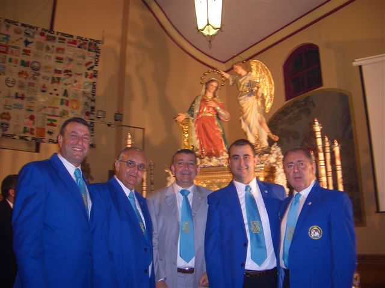
View full photograph ↗In the workshop
These photographs were supplied in connection with Renzo Gauci and show ornamental carving in progress.

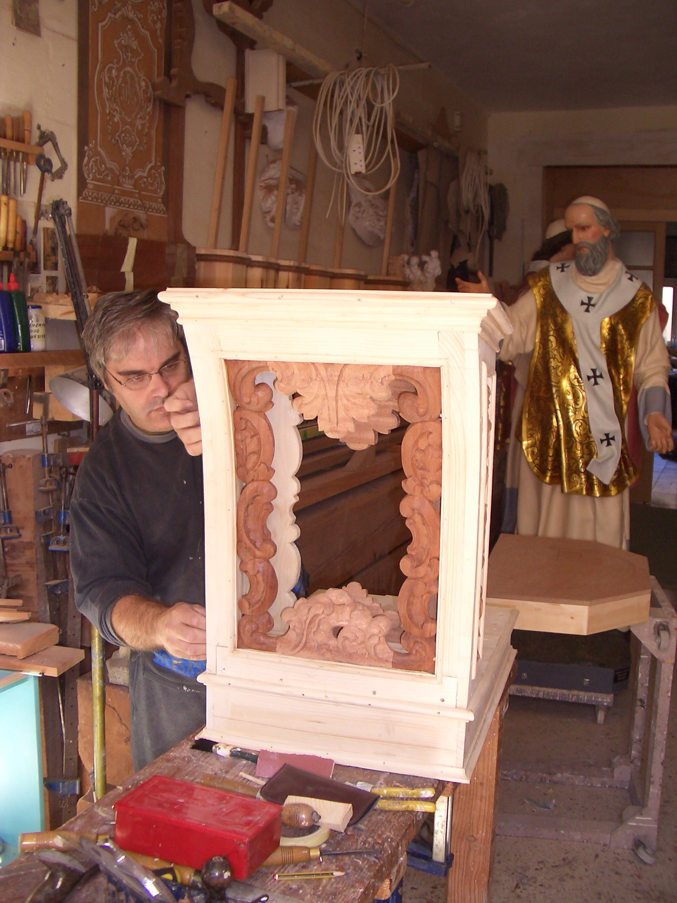
View full photograph ↗
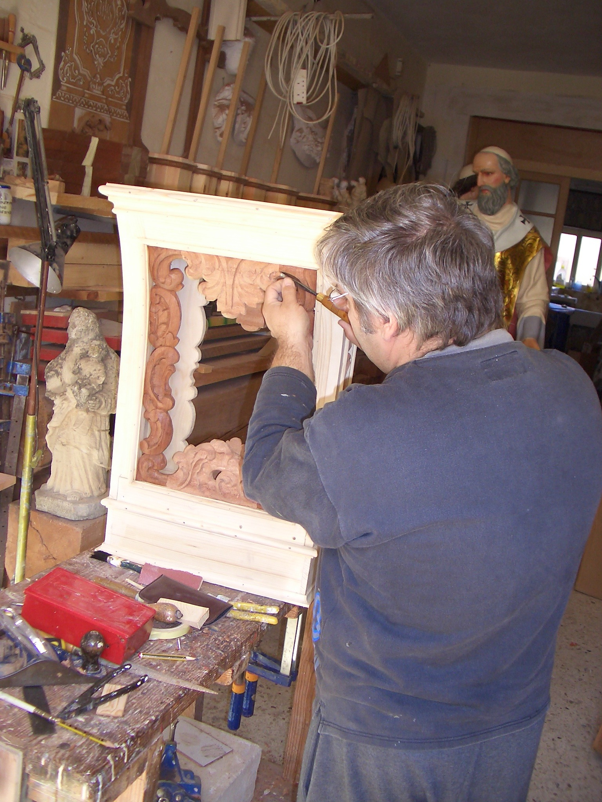
View full photograph ↗From the handling archive
Three small, low-resolution photographs preserved as part of the collection.

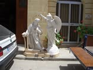
View full photograph ↗
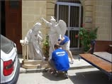
View full photograph ↗
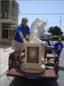
View full photograph ↗Milestones across the years
- 1976The club begins; its first Annunciation feast is celebrated in Queenscliff.[1] [2]
- 1979The first club statue is commissioned and produced.[1] [2]
- 1980First St Gregory’s picnic at Portarlington.[1] [2]
- 1982The remembrance Mass tradition begins, according to the historical club profile.[2]
- 2000The registered entity’s ABN is active from 20 April. This registration date is separate from the club’s 1976 foundation.[7]
- 2019The parish formally adopts the name Holy Trinity Catholic Parish on 24 November.[4]
- 2026The club’s fiftieth anniversary and Annunciation celebrations are recorded in the parish bulletin.[3]
Help us preserve our shared history
I have put this history together with care and respect. If any information is incorrect, or if you can add names, dates, photographs or memories, please contact me through Facebook.
Your contributions will help me improve the website and preserve the story of our community and Renzo’s work for future generations.
Clifford Debattista
Sources and acknowledgements
- Hobsons Bay City Council · club history ↗
- MCCV · historical club profile (includes a 2010/11 committee list) ↗
- Holy Trinity Catholic Parish · bulletin, 3 May 2026, page 2 ↗
- Holy Trinity Catholic Parish · parish history ↗
- Kenneth Cassar · Tislima lil Renzo Gauci, Festa 2019 (University of Malta) ↗
- Simon Mercieca · Renzo Gauci: an appreciation, 3 September 2018 ↗
- Australian Business Register · TARXIEN SOCIAL CLUB INC ↗
Commissioning information and family photographs supplied by Clifford Debattista, October 2026. The anniversary badge is a proposed commemorative redesign, rather than an officially adopted club logo.
Historical sources checked on 16 October 2026.
More verified Tarxien communities in other countries will be added here.